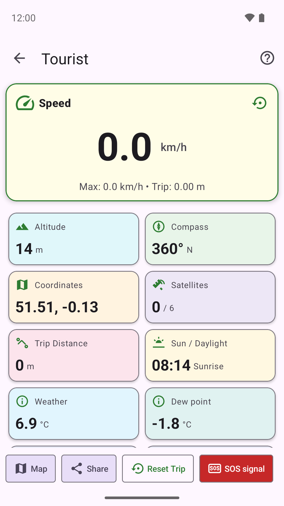
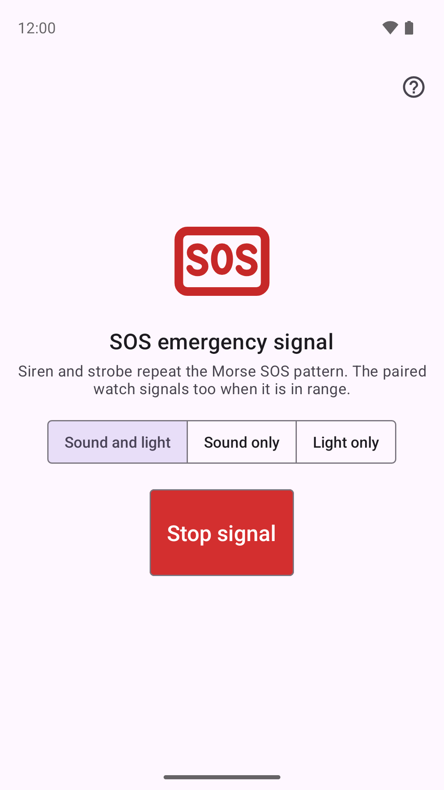
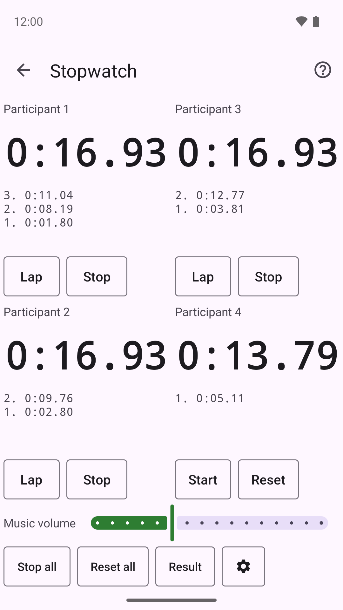
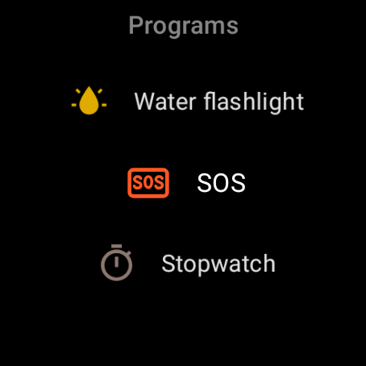

Check where you are heading
Open the dashboard: a compass tile with your heading, then speed, altitude, coordinates, satellites, sunrise and sunset, steps, trip distance and the weather at your position.
Tourist
Hiking kit for Android and Wear OS
One app on your phone and your watch: a dashboard of what your sensors read, a siren and a strobe that reach your paired watch, and a flashlight that no wet touch can switch off.
Tourist is a hike kit for an Android phone and a Wear OS watch. It is for you when you walk a trail alone or with a group and want your heading, a light and an SOS signal in one place.
Open the dashboard: a compass tile with your heading, then speed, altitude, coordinates, satellites, sunrise and sunset, steps, trip distance and the weather at your position.
One button starts a siren and a Morse SOS strobe on the phone and on the paired watch. It sends no SMS and makes no call.
The water flashlight is a full-screen light that no wet touch can switch off. A volume key puts it out. It is a touch lock, not waterproofing.
A stopwatch for one, two or four participants, each with their own laps, and a result you can share.




Tourist is open source under the MIT licence. The source of the phone app, the Wear OS app and the watch face is public.
A compass hero tile with your heading, then speed, altitude, coordinates, satellites, sunrise and sunset, steps and cadence, the trip distance with the climb and descent, and the weather at your position. With a barometer, the magnetic-field tile shows the air pressure in millibars, and the gyroscope tile draws a 3D phone that turns with yours.
The buttons below open a map, share your position as text, reset the trip and open SOS.
One button starts a loud siren and a bright Morse strobe. Started on the phone, the signal also starts on your paired watch, and the other way round, so the people near you can find you. Choose sound and light, sound only or light only.
SOS sounds, blinks and reaches your paired device. It sends no SMS and makes no call.
The water flashlight is a full-screen light that no wet touch can switch off: rain, snow or a wet glove leave it on. You switch it off with a deliberate key press.
It is a touch lock, not waterproofing. Android asks you to pin the app before the light starts.
A screen light in any colour, the camera flash as a torch, home screen widgets and a shortcut in the notification shade.
A stopwatch for one, two or four participants with laps and results, music of your choice while it runs, and a home screen widget. On the watch it keeps running as an ongoing activity.
The Wear OS app brings SOS, the water flashlight and the stopwatch to your wrist, with or without the phone nearby. The Tourist watch face is a separate package for the watch.
The guide takes the tools one task at a time. Support says where to ask and what to include. The privacy policy lists what the apps read, store and send. Help is also built into every screen of the phone app and works offline.
The developer receives none of your data. The privacy policy lists every permission and the one request that leaves the phone: the weather request to Open-Meteo.
Tourist is open source under the MIT licence. Read the code, follow the changes or open an issue in the repository.